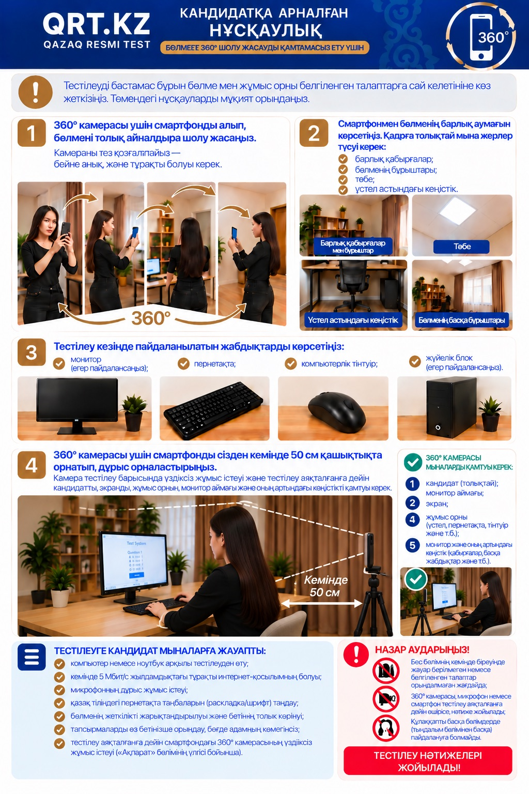

Тест басталмас бұрын бөлме мен жұмыс орны талаптарға сай екенін көрсету керек. Төмендегі нұсқауларды мұқият орындаңыз.

Тестті бастамас бұрын мына тізімді тексеріп шығыңыз.
Тест тек компьютер не ноутбук арқылы тапсырылады.
Жүйе тұрақты жұмыс істеуі үшін тек Chrome браузерін қолданыңыз.
Жылдамдығы кемінде 5 Мбит/с болуы керек.
Компьютердің камерасы мен микрофоны дұрыс жұмыс істеуі керек.
Бөлмені көрсету және тест бойы түсіріп тұру үшін. Штатив болса жақсы.
Компьютерде қазақ тілінің раскладкасын алдын ала қосыңыз.
Бетіңіз толық әрі анық көрінуі керек.
Тіркелгенде аты-жөніңізді жеке куәліктегідей жазыңыз — сертификатта өзгеріссіз шығады.
Смартфонды алып, бөлменің ортасында тұрып, баяу бір толық айналым жасаңыз. Камераны күрт қозғалтпаңыз — бейне анық әрі тұрақты болсын.
Кадрға мыналар толық түсуі керек: барлық қабырғалар, бұрыштар, төбе және үстелдің асты.
Монитор (болса), пернетақта, тінтуір, жүйелік блок (болса).
Камера тест біткенше үздіксіз жұмыс істеп, сізді, экранды, жұмыс орнын және монитордың артын көрсетіп тұруы керек. Смартфонды штативке немесе тұрақты тіреуішке бекітіңіз.
Барлық талап бір суретте. Үлкейту үшін суретті басыңыз.

WhatsApp-қа жазыңыз: +7 777 802 4348